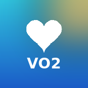
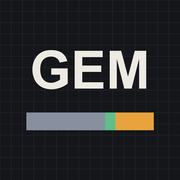
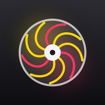
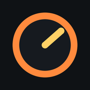
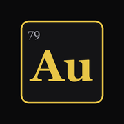

Training & engineering
Jake's Tools
Fitness

VO₂max Estimator VO₂max from heart rate, pace, grade and surface, plus energy cost per km.
Cars
EV Charge Planner Charge time, target battery, cost and miles added for any charger.

GEM Blend Calculator Stoich AFR, RON, flex-fuel sensor reading and cost for gasoline / ethanol / methanol blends.

Turbo Match Bench Match a compressor and turbine to your engine: live compressor map, backpressure and a match scorecard.

Engine Simulator 3D piston engine with live physics, sound, cutaways and an editable layout. Best on desktop.
Science

Elements Explorer An interactive periodic table where every element is a sample you can spin and zoom. Best on desktop.
Add a tool to your Home Screen: open it in Safari, tap Share, then Add to Home Screen. Each tool gets its own icon and works offline once it has been opened.